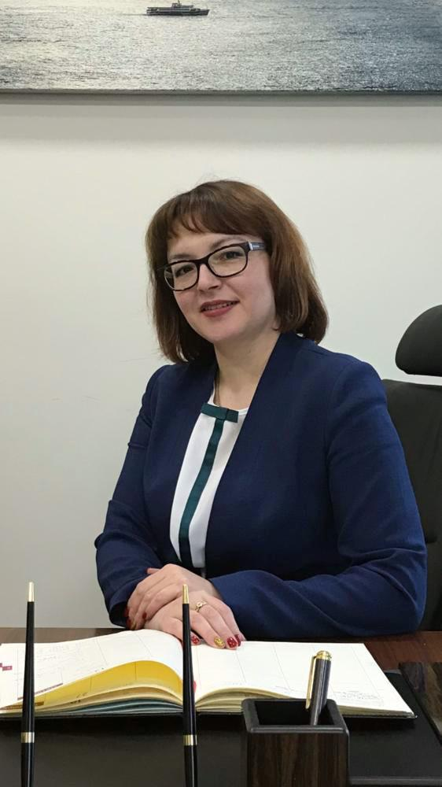

Blog about myself

Elina Sirotina
My projects
-
JSC "Airport Tolmachevo" Reconstruction of the air terminal complex of international / domestic air lines of the international airport Novosibirsk (Tolmachevo).
-
JSC "ARKHBUM" Construction of a plant for the production of packaging and corrugated cardboard Ulyanovsk region
-
LLC "Saratov Biotechnologies" Construction of a plant for deep processing of wheat for the production of amino acids Saratov region
-
OOO Miratorg - Zapad Reconstruction of the production building for the production of frozen meat semi-finished products and ready meals, located at the address: Kaliningrad region, Guryevsky district, Nevskoe village, Sovkhoznaya st., 12 Kaliningrad region
-
JSC "Apatit" Strategic development of the Volkhov branch of JSC "Apatit" for the period up to 2025 Leningrad Region
ОБРАЗОВАНИЕ:
- Бакалавриат(Информационные системы и технологии)
- Курсы по программированию TelRan
- Anti-corruption expertise of regulatory legal acts, Kazan
Kazan (Volga region) University
- Research Institute of Additional Education and Vocational Training, Moscow
Management in the organization, "Economist-manager”
- Legal support of a state organ, Kazan
Kazan (Volga Region) Federal University
- Contract system in the field of procurement of goods, works and services, Moscow
Institute of Public and Regulated Procurement, Competition Policy and Anti-Corruption Technologies
- Requirements for the composition and execution of management documents, Moscow
Academy of National Economy and Public Administration by the President of the Russian Federation
Strong problem-solving skills
Punctuality and professional in the development of regulations
Expert in support of turnkey investment projects
Expert in the development and maintenance of investment protection and promotion agreements
ADDITIONAL INFORMATION
I am co-author of the first municipal-private partnership agreement in Russia, author of major investment and concession agreements. I develop guidelines, "road maps", standard and recommended forms of documents in the field of investment. Developed regulatory and legal acts of the Republic of Tatarstan in the field of investments, as a result of which the republic took the 1st place in Russia in terms of regulatory support according to ASI ratings. I have a wealth of successful experience in legal activity, which is reflected in scientific research.
Expected Salary: 7000 euro